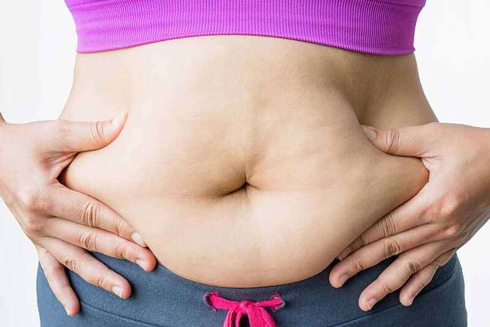
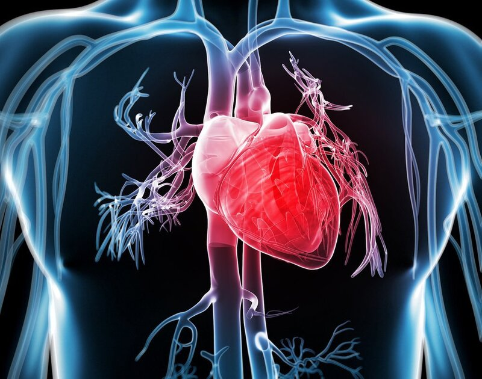
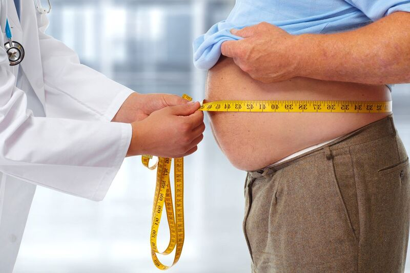

NHỮNG ẢNH HƯỞNG CỦA BÉO PHÌ ĐỐI VỚI CUỘC SỐNG
1. Béo phì là gì?
Người béo phì có tình trạng tích mỡ thừa quá mức và gây hại đến sức khỏe. Như vậy, bệnh béo phì sẽ thể hiện rõ ở trọng lượng cơ thể so với trọng lượng tiêu chuẩn dựa trên chiều cao của người khỏe mạnh.

Béo phì là tình trạng mỡ thừa tích tụ quá mức trong cơ thể
Điều này không có nghĩa là người bình thường không có tích tụ mỡ thừa mà trong cơ thể luôn dự trữ lượng mỡ nhất định để cơ thể sử dụng khi cần thiết. Mỡ có thể chuyển hóa thành năng lượng cho hoạt động của các cơ quan và cơ thể, có vai trò giữ nhiệt và bảo vệ các cơ quan khỏi chấn động. Song khi lượng mỡ tích tụ này quá lớn, nó lại cản trở hoạt động của các cơ quan.
Chỉ số cân nặng BMI được sử dụng để phân loại bệnh thừa cân, béo phì. Công thức tính chỉ số này đơn giản và đánh giá tương đối chính xác lượng mỡ trong cơ thể.
Chỉ số BMI = Cân nặng cơ thể / (Chiều cao x chiều cao) = kg/m2
Cũng theo phân loại của tổ chức Y tế thế giới WHO, người trưởng thành bình thường có cân nặng vượt quá tiêu chuẩn như sau:
-
BMI từ 25 - 29.9: thừa cân.
-
BMI từ 30 trở lên: Béo phì.
Người béo phì thường tích tụ mỡ thừa ở những bộ phận sau của cơ thể đầu tiên: bụng, eo, đùi, ngực,… Người béo phì nghiêm trọng mỡ sẽ tích tụ trên toàn cơ thể.
2. Thừa cân béo phì ảnh hưởng như thế nào tới cơ thể?
Cân nặng quá khổ trước hết sẽ khiến người bệnh mất tự tin về ngoại hình bản thân, hơn nữa còn gây tăng nguy cơ mắc bệnh lý nguy hiểm.
Dưới đây là những yếu tố mà béo phì có thể ảnh hưởng tới tâm lý cũng như sức khỏe người bệnh:
2.1. Gây cảm giác tự ti
Người béo phì thường mất tự tin trong giao tiếp hàng ngày, với người xung quanh và tình trạng căng thẳng trước đám động,… Điều này ảnh hưởng rất lớn đến cuộc sống cũng như công việc.
2.2. Bệnh lý xương khớp
Với lượng mỡ tích tụ lớn trong cơ thể, trọng lượng cao nên hệ xương khớp phải chịu áp lực lớn hơn. Từ đó dễ bị thoái hóa, gây ra các bệnh lý như loãng xương, đau nhức khớp, gout, tổn thương cột sống, đau khớp gối,…
2.3. Bệnh tiểu đường
Béo phì và tiểu đường có mối liên hệ mật thiết với nhau. Người bị béo phì có nguy cơ đề kháng insulin (hormone điều hòa đường huyết) cao, là nguyên nhân trực tiếp gây ra tiểu đường tuýp 2.
2.4.Bệnh lý tim mạch
Mỡ thừa không chỉ tích lũy trong các mô, tế bào mà còn tăng cao trong máu của người béo phì, gây ra các bệnh rối loạn lipid máu. Tình trạng cholesterol trong máu cao không được kiểm soát sớm sẽ gây xơ vữa mạch máu, nhồi máu cơ tim, đột quỵ,…

Người béo phì dễ mắc bệnh tim mạch
Về lâu dài, tim phải hoạt động nhiều hơn để bơm máu đi nuôi cơ thể sẽ gây quá tải. Vì thế người bị béo phì thường mắc bệnh tim mạch, nhất là khi độ tuổi trung niên trở lên.
Suy giảm trí nhớ
Béo phì ảnh hưởng đến chức năng thần kinh ở cả trẻ em và người trưởng thành. Trẻ béo phì thường kém linh hoạt và chỉ số thông minh thấp hơn. Còn người trưởng thành bị béo phì có nguy cơ cao hơn đối mặt với chứng Alzheimer và suy giảm trí nhớ.
2.6. Bệnh lý tiêu hóa
Nguyên nhân do mỡ tích tụ bám vào các quai ruột quá mức, làm suy giảm hoạt động và gây ra táo bón, bệnh trĩ. Lâu dài, khi phân và chất thải độc hại tích tụ lâu làm tăng nguy cơ mắc bệnh Ung thư đại tràng.
2.7. Rối loạn nội tiết
Tình trạng này ảnh hưởng đến cả hai giới, nữ giới béo phì dễ bị rối loạn kinh nguyệt, khó mang thai, buồng trứng đa nang, có nguy cơ vô sinh cao. Khi đã mang thai, thai phụ cũng dễ bị đẻ khó, con sinh ra có thể bị béo phì di truyền và rối loạn chuyển hóa. Nam giới béo phì thường bị yếu sinh lý, vô sinh hiếm muộn.

Béo phì khiến nam giới thường bị suy giảm chức năng tình dục
2.8. Bệnh lý hô hấp
Sự tích tụ mỡ quá mức trong lồng ngực, ổ bụng và cơ hoành là nguyên nhân gây ra tình trạng khó thở ở người Thừa cân béo phì. Nguy hiểm hơn nếu béo phì nghiêm trọng, khó thở có thể tiến triển nặng hơn gây ra hội chứng Pickwick, khiến bệnh nhân ngưng thở khi ngủ, có nguy cơ gây tử vong.
Bên cạnh đó, hoạt động của các cơ quan của hệ hô hấp do cản trở của mỡ thừa cũng gặp vấn đề, gây triệu chứng ngáy, rối loạn nhịp thở, ngưng thở khi ngủ,…
2.9. Ung thư
Khi cholesterol trong máu tăng cao, sự có mặt của mỡ thừa nhiều sẽ khiến hệ miễn dịch hoạt động kém, khả năng kháng bệnh và nguy cơ ung thư sẽ cao hơn. Các nhà nghiên cứu đã tìm ra mối liên hệ giữa bệnh béo phì và ung thư trực tràng, ung thư tử cung, ung thư thực quản, ung thư vú, ung thư tuyến tiền liệt,…
3. Làm sao để phòng ngừa béo phì?
Để có một sức khỏe tốt và vóc dáng ưa nhìn, bạn cần nắm được béo phì là gì và duy trì cân nặng ở mức ổn định phù hợp là điều cần thiết.
Hãy thực hiện những điều sau để có một cơ thể khỏe mạnh:
3.1. Chế độ sinh hoạt lành mạnh
-
Giữ tinh thần thoải mái, hạn chế căng thẳng.
-
Không ngồi quá lâu, nên đứng dậy đi lại vận động hoặc thể thao nhẹ nhàng.
-
Theo dõi cân nặng thường xuyên để điều chỉnh chế độ ăn và luyện tập.
3.2. Chế độ ăn uống khoa học
-
Cần ăn đủ bữa, đúng giờ, đặc biệt không bỏ bữa ăn sáng vì nó khiến cơ thể mệt mỏi, kích thích ăn nhiều hơn ở những bữa sau.
-
Kiêng thực phẩm chế biến sẵn, nội tạng động vật, nước ngọt có ga, rượu bia,…
-
Tăng cường ăn trái cây, rau xanh để bổ sung chất xơ.
Vận động thể thao giúp cơ thể săn chắc, khỏe mạnh hơn, phòng ngừa béo phì
3.3. Luyện tập thường xuyên
-
Nên tạo thói quen tập thể dục mỗi ngày để cơ thể săn chắc, hạn chế tích tụ mỡ thừa.
-
Không nên tập luyện quá sức, tham khảo chế độ tập phù hợp với sức khỏe và điều kiện giờ giấc làm việc của bản thân.
-
Những môn thể thao phù hợp: tập gym, yoga, bơi, chạy bộ, đi bộ,…
Nắm được béo phì là gì và những ảnh hưởng nghiêm trọng của bệnh đến sức khỏe sẽ giúp bạn phòng bệnh một cách chủ động. Hãy thực hiện chế độ sinh hoạt lành mạnh, khoa học để phòng ngừa béo phì, kiểm soát cân nặng và chất béo trong cơ thể tốt hơn.